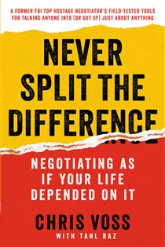

Library › Power & Strategy
Never Split the Difference — Summary & Key Lessons

The FBI's lead hostage negotiator teaches you to negotiate as if your life depended on it — because his did.
📖 OPEN THE FULL INTERACTIVE BREAKDOWN →🌐 Read it in Hindi, Hinglish, Gujarati, Tamil & 22 more languages — free, with audio.
💡 The Big Idea
Voss spent 24 years negotiating with kidnappers, bank robbers, and terrorists — where 'splitting the difference' means someone dies. His system overturns business-school orthodoxy: people decide emotionally and justify rationally, so the negotiator's job is emotion management, not argument. The toolkit: tactical empathy (label their feelings until they feel understood), mirroring (repeat their last words), the late-night FM DJ voice, getting to 'No' (safer than a fake 'Yes'), the magic phrase 'That's right,' calibrated 'How/What' questions that make THEM solve your problem, and the Ackerman system for hard bargaining. Compromise is lazy; 'win-win' is often a wolf's disguise. Aim for the counterpart to feel in control while you steer.
🧠 The 5 Key Lessons
Lesson 1: Tactical Empathy & Labeling
Chapters 1–3: The New Rules / Be a Mirror / Don't Feel Their Pain, Label It
Negotiation was modeled as rational chess (Getting to Yes) until behavioral economics proved humans are predictably irrational — feelings ARE the game. Tactical empathy means understanding and VOCALIZING the other side's perspective without agreeing with it. The tools: mirroring (repeat their last 1–3 words with an upward inflection — it triggers elaboration and buys time; use with the calm 'late-night FM DJ voice'), and labeling ('It seems like... / It sounds like... you're worried this will set a precedent') — naming an emotion validates it and measurably de-escalates the amygdala. For accusations they're already thinking, run an accusation audit: list every terrible thing they could say about you and say it FIRST ('You're going to think I'm greedy...'). Denial amplifies negativity; naming defuses it.
📖 Example: The Harlem standoff: three armed fugitives barricaded in an apartment, silent, for six hours. Voss's team simply repeated labels through the door in the DJ voice: 'It looks like you don't want to come out. It seems like you worry that if you open the door,… Read the full example →
⚡ Do this: This week, replace one 'I understand' with a real label: 'It seems like you're frustrated because...' Then go silent and count to four. In your next tough ask, open with the accusation audit.
Lesson 2: 'No' Is Protection — 'That's Right' Is Victory
Chapters 4–5: Beware 'Yes', Master 'No' / Trigger the Two Words
Salespeople chase 'Yes'; Voss chases 'No.' A quick 'yes' is usually counterfeit (polite escape or commitment-dodging), while 'No' makes people feel SAFE and in control — the real conversation starts after it. Ask no-oriented questions: 'Is now a bad time?' beats 'Do you have a few minutes?'; 'Have you given up on this project?' resurrects dead email threads like magic. The true summit is 'That's right' — spoken when your summary of THEIR position and feelings is so complete they feel fully heard (triggered by paraphrase + labels = a 'summary'). It signals the subtle epiphany that precedes every behavioral change. Beware its evil twin 'You're right' — that's what people say to make you stop talking.
📖 Example: The Philippine kidnapping: terrorist Abu Sabaya held an American missionary, demanding war damages, radio-taunting negotiators for months. Voss's colleague finally delivered a complete summary of Sabaya's worldview — the fisherman's-son grievances, the 500… Read the full example →
⚡ Do this: Revive one stalled thread today with 'Have you given up on [project]?' And in your next disagreement, summarize their whole position + feelings until you hear 'that's right' — before advancing a single argument of yours.
Lesson 3: Bend Their Reality: Fairness, Anchors & Loss
Chapter 6: Bend Their Reality
Splitting the difference is wearing one black and one brown shoe — never do it. The levers that actually move outcomes: DEADLINES are usually paper tigers (revealed by asking; hiding yours hurts you). FAIRNESS is the most powerful word — people accept worse deals that feel fair and blow up better ones that don't (Voss defuses it early: 'I want you to feel treated fairly — stop me anytime and we'll fix it'). LOSS AVERSION doubles gain-seeking: anchor their emotions ('I've got a lousy proposition for you...'), let them go first on price when possible, establish ranges with a high-credible anchor, use precise non-round numbers ($37,893 reads as calculated, not guessed), and deploy the occasional well-timed non-monetary term to shift the whole frame.
📖 Example: The ultimatum game's lesson runs through the chapter: offered a 'free' $1 from a $10 split, most people REJECT it as unfair — burning real money to punish disrespect. Voss's application in a rent negotiation: against a landlord's $1,730 hike, his student… Read the full example →
⚡ Do this: In your next money conversation: never name a round number (calculate to the odd digit), set an anchor range whose floor is your target, and pre-empt the fairness bomb by inviting them to call foul anytime.
Lesson 4: Calibrated Questions: The Illusion of Control
Chapter 7: Create the Illusion of Control
The counterintuitive core: let them feel in control while you set the frame. Calibrated questions — open-ended, starting with HOW or WHAT (never Why, which accuses) — enlist the other side in solving YOUR problem: 'How am I supposed to do that?' is a no that doesn't say no; 'What are we trying to accomplish here?' resets a hostile frame; 'How would you like me to proceed?' surfaces their constraints. Each question buys time, extracts information, and — critically — gives the counterpart the feeling of authorship, and people don't fight their own ideas. Pair with self-control rules: no reactive anger (use 'I'm sorry, how am I supposed to do that?' instead), and when attacked, pause, breathe, label.
📖 Example: The Haiti kidnappings: gangs demanded $150,000 for kidnapped relatives. Voss taught families one question: 'How am I supposed to get that kind of money?' — no refusal, no counter, just the problem handed back. Every case settled between $4,500 and $8,500.… Read the full example →
⚡ Do this: Memorize the big three: 'How am I supposed to do that?', 'What's the biggest challenge you face?', 'How would you like me to proceed?' Deploy one per difficult conversation this week — then shut up and let them work.
Lesson 5: Guarantee Execution & Find the Black Swans
Chapters 8–10: Guarantee Execution / Bargain Hard / The Black Swan
A 'yes' without HOW is nothing: interrogate implementation ('How will we know we're on track?'), watch for counterfeit yeses via the Rule of Three (get agreement three ways in one conversation), read the 7/38/55 rule (words/tone/body — when they conflict, trust tone and body), and mind the Pinocchio effect (liars use MORE words and more third-person pronouns). Remember the table isn't everyone: negotiate with the 'behind the table' players who can kill the deal later. For hard bargaining, the Ackerman plan: target price × 65% first offer, then 85%, 95%, 100% in decreasing increments, ending on a precise number + a non-monetary item (signals you're bled dry). Above all hunt BLACK SWANS — the 1–3 unknown pieces of information that change everything; they surface in unguarded moments (early arrivals, hallways, dinners), and their best predictor is understanding the counterpart's RELIGION: worldview, constraints, and what they believe they answer to.
📖 Example: The Dwight Watson standoff: a tobacco farmer in a tractor claiming bombs, paralyzing Washington DC. Negotiation stalled until a stray remark revealed his religion — literally: Watson was a devout man who had promised God he'd surrender... but couldn't do it… Read the full example →
⚡ Do this: Before your next big negotiation, write three hypotheses about their hidden constraints ('what would explain their behavior if they're acting rationally by THEIR rules?'). Test each with calibrated questions — and schedule informal time around the formal meeting; that's where swans swim.
✅ 5-Step Action Plan
- Label emotions and mirror last words — with the DJ voice — daily.
- Ask a no-oriented question to revive one dead thread this week.
- Summarize their world until you hear 'that's right' before arguing.
- Replace refusals with 'How am I supposed to do that?'
- Prep every big negotiation: Ackerman numbers + three black-swan hypotheses.
💬 Best Quotes from Never Split the Difference
- “He who has learned to disagree without being disagreeable has discovered the most valuable secret of negotiation.”
- “'No' is the start of the negotiation, not the end of it.”
- “The most powerful word in negotiations is 'Fair.'”
Interactive version: mark lessons as read, listen in your language, share quote cards.